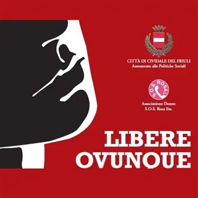

da sab 14 nov a mer 25 nov
Libere ovunque - La condizione delle donne nel mondo
Serie di eventi a Cividale del Friuli in occasione della Giornata internazionale per l'eliminazione della violenza contro le donne
 Indicazioni
Indicazioni
- Costi e prenotazioni
- Costo non indicato · Prenotazione non indicata
- Programma
- Programma da verificare. Apri la fonte ufficiale per orari e possibili aggiornamenti.
- In caso di maltempo
- Nessuna indicazione specifica pubblicata.
- Note
- Acquisito automaticamente dalla fonte.
L’EVENTO
Descrizione completa
In occasione del 25 novembre, Giornata internazionale per l'eliminazione della violenza contro le donne, il Comune di Cividale del Friuli invita la cittadinanza ad una serie di eventi dedicati.
Sabato 14 novembre 2026 – ore 19:30
Chiesa di San Francesco
Francesca, Madre Cabrini – La Santa dei migranti
Melologo sulla vita della Santa Francesca Saverio Cabrini, la religiosa italiana naturalizzata statunitense, fondatrice delle Missionarie del Sacro Cuore di Gesù e proclamata patrona universale degli emigranti. Testo originale e Interpretazione: Isabel Russinova
Regia: Rodolfo Martinelli Carraresi
Esposizione artistica curata dall’Associazione Gordineto - Art Director Pia Molina
Ingresso libero
Mercoledì 18 novembre 2026 – ore 17:30
Aula Magna del Liceo Classico "Paolo Diacono" Virinoj, Angeloj e Leoninoj – Donne, Angeli e Leonesse
Presentazione del libro “Virinoj, Angeloj e Leoninoj – Donne, Angeli e Leonesse” di Isabel Russinova, Armando Curcio Editore – Dialogo con l’autrice.
Una raccolta di profili di donne dalla vita estrema e dal destino importante, un percorso al femminile dall'inizio dei tempi fino ai nostri giorni. La scelta del titolo in esperanto, la lingua nata per unire tutti i popoli, è un messaggio di speranza affidato alla sensibilità, tenacia e forza delle donne. L'autrice Isabel Russinova, grazie a un'attenta ricerca storica, delinea ritratti veritieri ma anche umani, emotivi, originali di ognuna delle protagoniste come: Battista Sforza; Isabella D'Este; la rivoluzionaria Olympe de Gouges; la scienziata Eva Mameli Calvino; e infine gli angeli come Sara Di Pietrantonio vittima di femminicidio. Queste sono solo alcune delle tante donne che hanno meritato un posto d'onore nella storia.
Sabato 21 novembre 2026 – ore 17:30
Museo Archeologico Nazionale Elegia d’amore, Canto alla Grande Madre
Lettura e interpretazione recitata del testo “Elegia d’amore, canto alla Grande Madre” di Isabel Russinova. Lo spettacolo esplora il cammino del femminile dalle origini, il legame profondo con la natura e la Terra, e offre una riflessione universale sui diritti umani e la tutela dell'ambiente.
Con: Isabel Russinova
Mercoledì 25 novembre 2026 - ore 11:30 e replica ore 17:00
Aula Magna Scuola Secondaria di I grado "Elvira e Amalia Piccoli" Lumi Videla
Proiezione del film dedicato a Lumi Videla, giovane dirigente del Mir cileno assassinata dal servizio segreto Dina e gettata nel recinto dell’ambasciata italiana che ospitava 250 militari in fuga dal regime di Pinochet.
Per maggiori informazioni: Ufficio Politiche Sociali mail: giovani.sociale@cividale.net
IL PROGRAMMA
Programma e orari
Appuntamenti raccolti dalle fonti elencate. Dove manca un orario, non è ancora disponibile in questa scheda.
Programma pubblicato
- Dal 2026-11-14 al 2026-11-25
INFORMAZIONI UTILI
Prima di partire
- Controllare la fonte prima di partire.
ORGANIZZAZIONE